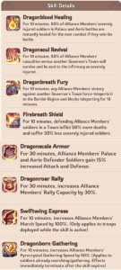

Contents — jump to a section
The five rules that decide the event
Everything below is detail. These five rules are the event.
- Joiners get points and rewards. They get 0 seconds of Palace time.
- So one player must lead every rally, for hours.
- Pick that player before the battle. Write the name down.
- Everyone else supports them.
- Two Aeries held is worth more than 40% more troops.
- Do not rush the Palace with no buffs active.
- Take the towers first. Hit the Palace after.
- A partner alliance holding a tower does not buff you.
- This is true even if you are coordinating with them.
- Build your own crystal supply. Do not plan around anyone else's buff.
- Palace and Aerie fights: troops are only injured. Nobody dies.
- Attacking a player's town: troops die. This is permanent.
- Your infirmary is unlimited, but only while you are on the battlefield.
- Do not attack towns unless R5 tells you to.
- This kills more troops than the enemy does.
- Heal down before 19:00.
- Set an alarm on your phone.
Event structure & timeline
Flamedragon Tyrant is a cross-kingdom battle. Every alliance in your Zone fights on one map, for one throne, for 8 hours.
Kingdoms of similar progress are grouped into a Zone. Alliances from every kingdom in that Zone compete on one shared map. The winner holds the Tyrant title for 30 days, across the whole Zone.
- Your account needs a Town Center at Truegold IV or higher to register.
- Kingdoms without Gen 6 can still watch the battle. They cannot fight in it.
- The event runs about every 2 months. If your kingdom just missed Gen 6, the next window is roughly 2 months away.
| Phase | Days (UTC) | What happens | What you do |
|---|---|---|---|
| Preview | ~1 week before | The game announces the event. Zone matchups are already set. | Check the Zone list. Find the 2 or 3 alliances that can actually win. |
| 1 · Sign-up | Mon – Tue | R4/R5 register the alliance. Only top alliances qualify. You must already be a member when sign-up closes. | Lock your roster now. No late joins, no swaps. |
| 2 · Dispatch | Wed – Thu | Name up to 60 fighters. Predictions open. | Publish the 60 and the reserve list. Place your predictions. |
| 3 · Eve of Battle | Fri – Sun | Prep time: Champion's Eve, Searing Path missions, the Dragon Caravan shop. | Push Champion's Eve milestones. Brief the roster. |
| 4a · Battlefield opens | Sun 11:00 | You enter. A 5-minute lock stops teleport, attack, scout and garrison. Then 1 hour to get in position — no combat. | Teleport in by power tier. Stage the throne rally. |
| 4b · Palace battle | Sun 12:00 – 18:00 | The Palace and all four Aeries are open. Mines and escorts spawn every 30 minutes. Crystal skills are live. | Run the battle clock (§11). |
| 4c · Cooldown | Sun 18:00 – 19:00 | No attacks. You can stay on the map. If you leave, you cannot come back. | Heal down before you exit. |
| 5 · Rearmament | Sun 18:00 – Tue 24:00 | Healing speed +500%, healing cost −30%. | Schedule a mass heal at a busy hour. Collect your free packs. |
Who can join
Two rules decide if you fight. One is the game's rule. One is ours.
| Requirement | |
|---|---|
| Game minimum — account | Town Center Truegold IV |
| Game minimum — kingdom | Hero Generation 6 — Server 745 has this |
| Our castle rule | TG8 + T11. Both. |
TG8 + T11 is our rule, not the game's rule.
- A rally is limited by the number of troops, not their tier.
- Every slot filled with T10 or lower wastes rally space.
- Lower-tier troops die faster and cost more to heal.
- If you are below TG8 or T11, you are not out of the event — you join the Support Team instead.
- That job needs march speed, not tier. It is also where the crystal pool comes from, and the crystal pool decides the last hour.
How alliances qualify
Every alliance in the Zone can register. Only the strongest by power get in.
- The number of qualifying alliances depends on Zone size: around 40 in a small Zone, 115 or more in a large one.
- Ranking is Zone-wide, not kingdom-wide. Being #1 in your kingdom means nothing in a stacked Zone.
- Each governor also needs a minimum Town Center tier, set by the Zone.
Choosing your 60
60 is the maximum. Picking the right 60 is harder than it sounds. A roster built only from the power leaderboard loses to a roster built from who actually shows up.
| Filter | Rule | Why |
|---|---|---|
| Attendance | Confirmed present for the full 12:00–18:00 block | A strong player who leaves early helps less than an average player who stays. |
| Healing stock | Enough to heal your army twice | Injured troops that stay unhealed are troops out of the fight. |
| Rally capacity | 6–8 players who can lead a rally | You need backup captains for the Aeries. The throne captain never leaves the queue. |
| Discipline | Will not hit towns without a call | One undisciplined player can burn a third of your healing budget. |
| March speed | 3–5 fast accounts for mines and escorts | Crystals go to whoever arrives first, not whoever is strongest. |
Note: a player may leave the alliance after dispatch closes and still take part, as long as they rejoin before the battle phase ends. Useful for an emergency fix. Risky as a plan.
Glossary
These words appear everywhere in this manual. Learn them once.
| Term | What it means |
|---|---|
| Rally | An attack group. One captain plus up to 9 joiners. Holds 10 players. |
| Captain | The player who starts the rally. Only their Palace time counts. |
| Joiner | A player who adds troops to someone else's rally. |
| Core joiner | One of the first 4 joiners. Only their heroes give buffs to the rally. |
| Filler | Joiners 5 to 9. They add troops only — their heroes do not count. |
| Garrison | Troops defending a place you already hold. Not a rally. |
| Reinforce | Send troops to a place your alliance already holds. |
| Vulnerable | Can be attacked right now. |
| Protected | Cannot be attacked right now. |
| Aerie | One of the 4 towers around the Palace. |
| Buff | A temporary bonus to your stats. |
| Old Guard | The NPC defenders holding the Palace at 12:00. |
| Occupation time | How long you held the Palace as captain. This decides the Tyrant. |
| Load | How many troops you send. |
| Formation | The mix of infantry, cavalry and archers in a rally. |
| Magma Sanctum | The inner area. No shields allowed. |
| Border Region | The outer area. Shields work here. |
| Lava Shelter | The ring right next to the Palace. |
The battlefield map
One map. Three rings. The Palace sits in the middle.
An outer Border Region where cities spawn and shields still work. An inner Magma Sanctum where shields are stripped for good. The Palace at dead center, ringed by four Aeries.
| Zone | Rules | Who belongs there |
|---|---|---|
| Border Region yellow boundary | Cities spawn here at random when the battlefield opens. Shields work. Defeated cities in the center are sent back here. | Low and mid-power accounts, gatherers, escort hunters. Anyone conserving troops. |
| Magma Sanctum red boundary | Entering removes your shield for good. Full PvP. Everything that matters is inside. | Rally leaders, the throne candidate, Aerie squads, garrison stacks. |
| Lava Shelter inner ring | The band right around the Palace. No protection of any kind. | Staging ground for the Castle Team rally only. Do not park a city here. |

The Palace — and the captain rule
The Palace sits at the center, shielded for the first hour. When it opens, you must clear the Old Guard before anyone can hold it.
What this changes
- Name one throne candidate before D-Day. Two candidates splitting time is the most common way a strong alliance ends up with no Tyrant.
- Pick a high-deployment account that can hold a big garrison. It does not need to be your strongest account.
- You can hand the captain role to another player inside the Palace without leaving the team — occupation time then goes to the new captain. This is your backup plan if the candidate has to step away.
- The First Occupancy Reward goes to every member of the first alliance to hold the Palace, not just the captain. Worth a full commitment to the opening rush, even if you cannot hold it.
- The alliance leaderboard adds up the occupation time of all your captains. A second and third captain still build your alliance ranking after your Tyrant bid is settled.
Holding versus taking
Holding is cheaper than taking. The Palace favors whoever already holds it, stacked with Aerie buffs. Get in early, then switch to defense. An alliance that takes the Palace at 12:20 with Life + Shield running can survive attacks from a rival two or three times its power.
The four Aeries
Four Aeries surround the Palace and open at the same moment it does. Each runs a 30 minutes vulnerable / 30 minutes protected cycle. Whichever alliance holds an Aerie longest during a vulnerable round gets that Aerie's bonus, alliance-wide, for the next 30 minutes.
| Aerie | Position | Bonus | Type | Take it when… |
|---|---|---|---|---|
| Shield Aerie | North | +50% Troop Defense | Defensive | You already hold the Palace and expect to be rallied. Pairs with Life for a hard-to-kill garrison. |
| Life Aerie | South | +50% Troop Health | Defensive | Same reason. The single best survival stat — it deepens the pool your troops lose before they break. |
| Blade Aerie | West | +50% Troop Attack | Offensive | You need to break someone off the Palace. Pair with Dragon. |
| Dragon Aerie | East | +50% Lethality | Offensive | Same reason. Lethality turns enemy hits into severe injuries faster than raw attack alone. |

Rally doctrine
A rally holds 10 players. Learn this once, and every team in this manual makes sense.
Three rules
- Your gear, charms, research and hero buffs are all built on one type.
- A mixed march weakens all of them.
- It also makes the rally's ratio impossible to control or check.
Troops per player = rally capacity ÷ 10
Slots per troop type = ratio × 10
Example: capacity 1,800,000 → 180,000 each. With Dragonroar Rally (+30%): 2,340,000 → 234,000 each.
Capacity changes with the captain and the generation. The structure never changes. R5 says the number in the call. Nobody guesses.
The joiner core — same for every formation
| Slot | Hero |
|---|---|
| J1 | Hilda |
| J2 | Hilda |
| J3 | Saul |
| J4 | Chenko |
One core for attack and defense alike. At 16:40 on hour five, a roster that has to remember two different cores will get it wrong. The same core every time is worth more than a small edge.
The hero must be in the joiner's expedition team when they tap join, with expedition skills leveled. An unleveled hero in J1 wastes a core slot.
Join order
| Slot | Who | When to tap |
|---|---|---|
| C | Captain | Opens the rally |
| J1–J4 | Core | Now. They are already watching the screen. |
| J5–J9 | Fillers | 2 seconds later. |
The rally fills in 3 to 4 seconds and every march leaves together. Two seconds is the minimum delay that works — at zero, join order comes down to ping, and a hero carrier can end up fifth.
The three formations
| Type | Ratio | 10 players |
|---|---|---|
| Attack | 50 / 20 / 30 | 5 INF · 2 CAV · 3 ARC |
| Attack | 50 / 10 / 40 | 5 INF · 1 CAV · 4 ARC |
| Defense | 60 / 40 / 0 | 6 INF · 4 CAV · 0 ARC |
Attack 50/20/30 — balanced. Use for tower fights.
| Slot | Hero | Type |
|---|---|---|
| C | Lead set | Infantry |
| J1 | Hilda | Infantry |
| J2 | Hilda | Infantry |
| J3 | Saul | Infantry |
| J4 | Chenko | Cavalry |
| J5 | — | Infantry |
| J6 | — | Cavalry |
| J7 | — | Archers |
| J8 | — | Archers |
| J9 | — | Archers |
Attack 50/10/40 — maximum damage. Use for the seize and re-takes.
| Slot | Hero | Type |
|---|---|---|
| C | Lead set | Infantry |
| J1 | Hilda | Infantry |
| J2 | Hilda | Infantry |
| J3 | Saul | Infantry |
| J4 | Chenko | Cavalry |
| J5 | — | Infantry |
| J6 | — | Archers |
| J7 | — | Archers |
| J8 | — | Archers |
| J9 | — | Archers |
Infantry absorbs. Archers deal the damage. Run this under Blade + Dragon, with Dragonbreath Fury.
Defense 60/40/0 — hold the Palace.
| Slot | Hero | Type |
|---|---|---|
| C | Lead set | Infantry |
| J1 | Hilda | Infantry |
| J2 | Hilda | Infantry |
| J3 | Saul | Infantry |
| J4 | Chenko | Cavalry |
| J5 | — | Infantry |
| J6 | — | Infantry |
| J7 | — | Cavalry |
| J8 | — | Cavalry |
| J9 | — | Cavalry |
No archers. This is a wall, not a damage march. Run this under Life + Dragon, with Dragonscale Armor.
Only slots J6–J9 ever change
| Slot | 50/20/30 | 50/10/40 | 60/40/0 |
|---|---|---|---|
| C | INF | INF | INF |
| J1 | INF | INF | INF |
| J2 | INF | INF | INF |
| J3 | INF | INF | INF |
| J4 | CAV | CAV | CAV |
| J5 | INF | INF | INF |
| J6 | CAV | ARC | INF |
| J7 | ARC | ARC | CAV |
| J8 | ARC | ARC | CAV |
| J9 | ARC | ARC | CAV |
6 of 10 players never change what they send. Only 4 filler slots switch. That is why the formation call is one line, and why people get it right under pressure.
Fewer than 10 players
Keep the ratio. Cut fillers. Slots C to J4 are always filled first.
| Slots | 50/20/30 | 50/10/40 | 60/40/0 |
|---|---|---|---|
| 10 | 5 / 2 / 3 | 5 / 1 / 4 | 6 / 4 / 0 |
| 9 | 5 / 2 / 2 | 5 / 1 / 3 | 5 / 4 / 0 |
| 8 | 4 / 2 / 2 | 4 / 1 / 3 | 5 / 3 / 0 |
Crystal economy
Pyrocrystals pay for Crystal Skills. They come from two sources, both every 30 minutes, both contested.
| Source | Spawn | Yield (approx.) | Rule |
|---|---|---|---|
| Dragonborn Escorts | At battle open, then every 30 min | ~300 crystals + ~30,000 points | Solo attacks only — no rallies. Costs no stamina, but takes a march queue slot. Won by arrival speed, not power. |
| Pyrocrystal mines Lv.1 | 15 min after open, then every 30 min | ~600 crystals ~1.0/sec | Gathering also earns personal points. Mostly on the outer map. |
| Pyrocrystal mines Lv.2 | Same cycle | ~1,200 crystals ~1.5/sec | Closer to the center and heavily contested. Other players can attack your squad and steal the node. |
Budget the battle
Crystal skills cost somewhere between 10,000 and 50,000 crystals each. Your skill count is decided in the first two hours, by how many people you put on farming duty — not by how hard you fight.
Crystal skills — and when to fire them
Only R4/R5 members standing on the battlefield can fire Crystal Skills. Skills buff every member of your alliance on the battlefield, stack with all other bonuses, run on their own cooldowns, and can run at the same time. They stop working once the Palace battle ends. The crystal pool does not carry over to the next event.

| Skill | Duration | Effect | Fire it when |
|---|---|---|---|
| Dragonblood Healing highest value | 10 min | 50% of your severely injured troops from Palace/Aerie fights are healed for the next fight — but only in fights you win. | Only while you are actively holding the Palace or an Aerie and taking hits. Firing it while your captain is still marching is the most common waste in the event. |
| Dragonscale Armor | 30 min | +15% Attack and Defense for Palace and Aerie defenders. | The moment your throne rally lands and turns into a garrison. Stack under Life + Shield. |
| Dragonroar Rally | 30 min | +30% alliance rally capacity. | Before the rally forms, not after — capacity is read at formation. Use it on the seize and on your biggest re-stack. |
| Dragonbreath Fury underrated | 10 min | Force-teleports a town you just beat out to the Border Region and blocks it from teleporting back for 10 minutes. Not a stat buff — a map-control tool. | Before a re-take. Pushing enemy cities away from the Palace lengthens every rival's reinforcement march. It comes out of the crystal pool, not your roster. |
| Dragonsoul Revival | 10 min | 50% of your alliance's losses from a town attack survive instead of dying, and go to the infirmary as severely injured. | Before or during a town raid. This is the skill that makes Rule 4 survivable. |
| Firebreath Shield | 10 min | Your defenders in a town under attack deal 50% more deaths and take 50% fewer severe injuries. | The moment a rival commits to hitting your members' towns. It flips the trade in your favor, instead of just absorbing it. |
| Dragonborn Gathering | 10 min | +50% Pyrocrystal gathering speed, even for squads already marching or gathering. Effects end the instant the skill expires. | Early, the moment Support Team has squads active on nodes. Cheap tempo — a faster first two hours pays for the expensive skills later. |
| Swiftwing Express | 10 min | +100% March Speed — but only for troops sent out while the skill is active. Does nothing for armies already marching. | Right before you send a rally or reinforcement — the throne seize, an Aerie switch — never mid-march. |
The end-game hoard
The strongest crystal play is not spending early. In the final 60–90 minutes, the leading alliances have used up their healing, their activity drops, and their garrisons are thin. An alliance that has banked 60,000+ crystals and fires Dragonroar Rally → seize → Dragonscale Armor → Dragonblood Healing in that order can take the throne from a stronger rival and hold it to the end. Occupation time adds up — but so does exhaustion.
The battle clock
The battle is 8 hours: 1 hour to get in position, 6 hours of fighting, 1 hour to heal. Print this. Everything in the battle phase runs off it.
| Window (UTC) | Length | What happens |
|---|---|---|
| 11:00 – 12:00 | 1 h | Enter, teleport, position, stage, pre-fill rallies. No combat. A 5-minute lock at 11:00 disables teleport, attack, scout and garrison. |
| 12:00 – 18:00 | 6 h | Palace open. Aeries run the 30/30 cycle. Crystal skills are live. Mines and escorts spawn every 30 minutes. |
| 18:00 – 19:00 | 1 h | Healing. No attacks. Leaving the map is permanent — you cannot come back. |
Aerie rounds inside the battle window
Six vulnerable rounds, six protected rounds:
| Vulnerable — take towers | Protected — buff is live, hit the Palace |
|---|---|
| 12:00–12:30 | 12:30–13:00 |
| 13:00–13:30 | 13:30–14:00 |
| 14:00–14:30 | 14:30–15:00 |
| 15:00–15:30 | 15:30–16:00 |
| 16:00–16:30 | 16:30–17:00 |
| 17:00–17:30 | 17:30–18:00 |
Order of battle — 60 players
A fixed four-team plan: 20 at the Palace, 10 on Life, 10 on Dragon, 20 farming from four posts. Every position, every rotation, every call.
Why Life + Dragon is the right pair here
The obvious defensive pair is Life + Shield. Life + Dragon works better for this build, and it is worth knowing why before someone argues with you about it.
- Life Aerie (+50% Health, South) deepens the pool your garrison has to lose before it breaks. It is the best survival stat, because it scales with everything else you stack on top.
- Dragon Aerie (+50% Lethality, East) works on defense too, not just attack. Lethality turns your garrison's hits into severe injuries in the attacking rally. Held under Life, every failed enemy rally costs the attacker a real army, not a scratch.
- Shield (+50% Defense) reduces incoming damage, but does nothing to punish the attacker. Against a field of 40+ alliances taking turns at you, making each attempt costly is worth more than surviving it slightly better. Attackers who lose 400k troops on one attempt do not come back a third time.
The four teams
| Team | Size | Station | Job |
|---|---|---|---|
| CASTLE TEAM center | 20 | One cluster, staged tight against the Palace's south-east face, inside the Lava Shelter ring | Seize and hold the Palace. Two rallies running at once. |
| HP TURRET TEAM south | 10 | Palace side of the Life Aerie | Take and hold Life Aerie (+50% Health) every vulnerable round. |
| LETHALITY TURRET TEAM east | 10 | Palace side of the Dragon Aerie | Take and hold Dragon Aerie (+50% Lethality) every vulnerable round. |
| SUPPORT TEAM 4 posts | 20 | Four posts in the Border Region | Crystals and escorts. Feed the alliance skill pool. |
Why south-east
- The Life Aerie is south. The Dragon Aerie is east. Both Turret Teams are already in that quadrant.
- Staging Castle Team in the south-east puts all 40 combat players on one side of the map, with short reinforcement lines in every direction.
- When a Turret Team comes into the Palace on a protected round, the march takes seconds.
- You get one strong defensive front instead of three separate ones.
Teleport drill
Good tiles are gone within a minute of the window opening. Positioning is a 60-second scramble, then 59 minutes of waiting.
| Step | Time | Action |
|---|---|---|
| 1 | T−15 min | Everyone online, teleport item ready, map open. No scouting, no marching, no burning barricade — any of these blocks entry. |
| 2 | Window opens | R4 posts the drop call. Castle Team drops first — they need the tightest cluster. |
| 3 | +0–60 sec | Castle Team lands in the south-east diagonal. Turret Teams land on the Palace side of their tower. |
| 4 | +60–120 sec | Support Team takes the four Border Region posts. |
| 5 | +5 min | Everyone reports march time to their objective. Anyone slower than the group average moves now, not at 11:50. |
Every player carries three ranked target tiles, not one. If tile 1 is taken, drop on tile 2 without asking.
CASTLE TEAM · 20 · the Palace
Castle Team is 20 players running two full rallies of 10 at the same time. That is why it is 20 and not 10.
| CASTLE-1 — the throne rally | CASTLE-2 — the strike rally | |
|---|---|---|
| Captain | Throne candidate. Never substituted without a call. | Relief captain |
| Formation | Defense 60/40/0 | Attack 50/10/40 |
| Troop types | 6 INF · 4 CAV | 5 INF · 1 CAV · 4 ARC |
| Standing job | Hold the Palace. Start the rally again every time the garrison breaks. Never pauses. | Break the Old Guard at 12:00. Then enemy garrisons, re-takes, counter-rallies. |
- Only CASTLE-1's captain builds the Tyrant bid. CASTLE-2's captain still adds time to the alliance leaderboard, which is why it runs as a second rally rather than being folded into the first.
- The 12:00 seize uses both. CASTLE-2 clears the Old Guard, then CASTLE-1 lands behind it and turns into the garrison.
- Healing rotates by rally, not by player. CASTLE-1 never rests. CASTLE-2 stands down on the odd half-hours to heal, and reinforces the garrison during that time.
- At least two R4/R5 sit in Castle Team, so a Crystal Skill can always be fired from the center.
- Why the split is permanent: a player's troop type is fixed. One group of 10 cannot run both 60/40/0 and 50/10/40 at the same time. CASTLE-1 is the wall. CASTLE-2 is the hammer. Neither is ever reassigned mid-battle.
- The rally is 10 players. It starts again every time the garrison breaks. Only the captain's Palace time counts.
- The garrison is everyone else. They reinforce the tile you already hold. Reinforcements are not limited by rally size — that is how 30 extra players help during a protected half-hour.
- When a Turret Team "comes into the Palace," they reinforce the garrison and fill CASTLE-2. They do not squeeze into the captain's 10 slots.
HP TURRET TEAM · 10 · Life Aerie (South) · LETHALITY TURRET TEAM · 10 · Dragon Aerie (East)
Same structure, different tower: 1 captain, 4 core joiners, 5 fillers, formation attack 50/20/30. 10 players is roughly one full rally — exactly what an Aerie needs, and exactly why you contest two towers and not four.
- Vulnerable round: rally your tower.
- Protected round: the tower is locked. Come into the Palace — reinforce the garrison and fill CASTLE-2.
- Staging: both teams sit on the Palace side of their tower. One short march to the Aerie, one short march to the Palace, no wasted travel either way.
- Give up fast. If a stronger alliance commits to your tower, pull back rather than feeding a losing rally for 25 minutes. The next window is only 30 minutes away.
- One tower is enough. If HP Turret Team wins Life but Lethality Turret Team loses Dragon, the Palace still gets +50% Health that round. A split round is not a failure.
- The R4/R5 in each team can fire skills from the tower if the center's leaders are mid-march.
SUPPORT TEAM · 20 · four posts
Five players per side of the map, in the Border Region with shields up. Each post fans out in a shallow arc with small gaps between members, instead of bunching on one spot — that spread covers more of the surrounding spawns per post, instead of five accounts racing each other for the same node. 20 farmers is a large detail on purpose. It is what turns the last hour from a grind into a decision.
| Post | Composition | Rule |
|---|---|---|
| SUPPORT-N / E / S / W | 1 post lead 3 gatherers 1 escort hunter | Post lead claims nodes in text so two members never march on the same one. Gatherers work the nearest Lv.2 node, falling back to Lv.1. The escort hunter runs solo attacks only — escorts cannot be rallied. |
- Never fight for a node. Node fights give no personal points, so a lost squad there is a pure loss. Give it up, take the next one. This is a rule, not a suggestion.
- Post assignment matters because it stops 20 people racing the same spawns. Each post owns its quadrant, reports its haul at the top of the hour, and stays out of the other three.
- Escort hunters are chosen on march speed, not power. Escorts go to whoever arrives first.
- Expected yield: roughly 200,000+ crystals across the battle — comfortably 5 to 10 Crystal Skills. Report the running total hourly so leadership knows what it can afford in the last hour.
- 16:30 — move. Posts move to the inner edge of the Border Region so the final-hour march into the Palace is short. Teleport destination is power-gated, so low-power accounts may not be able to drop into the Sanctum — move early and march in, rather than relying on a teleport at 17:15.
- 17:15 — stop farming. Everyone joins Palace rallies as extra bodies. Crystals collected after 17:15 will not be spent.
Troop type census
One troop type per player means the roster is a census, not a power ranking. Assign types first, then pick the 60.
| Team | INF | CAV | ARC | Total |
|---|---|---|---|---|
| CASTLE-1 — defense 60/40/0 | 6 | 4 | 0 | 10 |
| CASTLE-2 — attack 50/10/40 | 5 | 1 | 4 | 10 |
| HP TURRET — attack 50/20/30 | 5 | 2 | 3 | 10 |
| LTH TURRET — attack 50/20/30 | 5 | 2 | 3 | 10 |
| Total | 21 | 9 | 10 | 40 |
Support Team — 20 players — troop type does not matter. They are chosen on march speed and availability.
Where the re-take package comes from. On the call HP WEST, the attack rally is CASTLE-2 plus archers pulled from the two Turret Teams. Six archers are available across them; four are needed.
Census checklist, before dispatch closes:
- All 40 combat slots named, each with one assigned troop type
- Each player holds at least one full load of that type, ideally more — you will send more than one march, and healing is not instant
- 4 core hero carriers named per rally (4 rallies = 16 carriers), each with a named backup
- Type shortages covered from the reserve list
- Published and pinned, with the ratio tables
Hour by hour, by team
| UTC | CASTLE TEAM 20 | HP TURRET 10 · LTH TURRET 10 | SUPPORT TEAM 20 |
|---|---|---|---|
| 11:00–11:05 | Prep lock — nothing is possible. Post the call order and the shift split in alliance chat now. | ||
| 11:05–11:50 | Teleport into the Lava Shelter ring, one cluster in the south-east diagonal. Confirm every player's march time to the Palace tile. | Teleport to the Palace side of Life (S) and Dragon (E). Confirm march times to both tower and Palace. | Take up the four posts in the Border Region, shields up. Scout node and escort spawn points in your own quadrant. |
| 11:50–12:00 | Pre-fill both throne rallies. Fire Dragonroar Rally before they form, so the extra capacity counts. Everyone in Castle Team holds a 50% Rally March Speedup ready for the seize. | Pre-fill both tower rallies. | Hold. Escorts spawn at 12:00. |
| 12:00–12:30 | Seize. CASTLE-2 clears the Old Guard. CASTLE-1 lands and turns into the garrison. Dragonscale Armor on landing. | Round 1 — take both towers. This round is raw, no buff yet. | Escorts at 12:00, first mines at 12:15. Full cycle. |
| 12:30–13:00 | Hold under +50% Health and +50% Lethality. 40 players at the center: 10 in the captain's rally, 30 reinforcing the garrison and filling CASTLE-2. Fire Dragonblood Healing once you are visibly taking hits. | Towers locked — everyone reinforces the Palace. | Mines at 12:45, escorts at 12:30. Report the crystal total. |
| 13:00–16:00 | Grind. CASTLE-1 never stops. CASTLE-2 rotates: stand down on the odd half-hours to heal, reinforce the garrison the rest of the time. | Alternate: towers on the vulnerable round, Palace on the protected round. Give up a tower right away if outmatched. | Keep cycling. Give up contested nodes. Hourly totals to leadership. |
| 16:00–17:00 | Check healing stock across all 20. If joiners are dry, run a smaller rally that refills every time, rather than a big one that breaks. | Same rhythm. If the Palace is under real pressure, skip a tower round and stay in the center — the Palace outranks both towers. | Last two full cycles, then move to the inner border edge at 16:30. |
| 17:00–18:00 | Use everything. All reserves, all speedups, the full crystal bank. A second at 17:50 is worth exactly as much as a second at 12:00. | Full commitment to the Palace, unless a tower is free to take with no fight. | 17:15 — stop farming. March in and join Palace rallies as extra bodies. |
| 18:00–19:00 | No attacks. Every one of the 60 heals down below their real infirmary cap before exiting. Nobody retreats without a call — retreat is permanent removal from the map. | ||
Comms
| Call | Format | Means |
|---|---|---|
| Seize | CASTLE GO — 12:00 | Both throne rallies launch. Everything else is secondary. |
| Collapse | HP IN / LTH IN | Tower locked, team reinforces the Palace now. |
| Give up | HP BREAK / LTH BREAK | Give up the tower this round. No argument, no follow-up rally. |
| Flip | HP WEST | Palace lost. HP Turret Team abandons Life, takes Blade. Mode switches to attack. |
| Skill | ARMOR UP / BLOOD NOW | Dragonscale Armor / Dragonblood Healing firing this second. Nobody else spends crystals. |
| Endgame | SUPPORT IN — 17:15 | Farming ends. All four posts march to the center. |
| Heal | SHIFT HEAL | The named rally heals. The other holds. |
All calls in UTC. One voice, one channel. The battle commander sits in Castle Team.
What this build gives up — read before committing
| Gap | Consequence | What to do |
|---|---|---|
| No disruption unit. Nobody is assigned to counter-rally, intercept enemy captains or clear cities. | Rivals stage next to the Palace unmolested and rally you at their own timing. | Buy it with crystals instead of bodies. Dragonbreath Fury clears enemy cities out of the Palace area for ~10 minutes — that is your disruption unit, and Support Team pays for it. Do not improvise a raid party out of Castle Team; that is how the rally lapses. |
| No offensive tower pair. Blade and Shield are given up to whoever wants them. | If you lose the Palace after ~14:00 you have no Attack buff to push a dug-in enemy off it. | This is why the 12:00 seize is required, and why the crystal bank exists. Re-take package: HP WEST → Dragonbreath Fury (clear their cities) → Dragonroar Rally → full push. Rehearse the sequence and the order. |
| 20 at the center is thin for six hours. Healing time off costs you. | Between 13:00 and 16:00 your effective rally can drop well below 20 on the vulnerable half-hours. | The CASTLE-1 / CASTLE-2 split is what holds this together — the single most important discipline in the plan. The 40-player protected windows cover the rest. |
| 20 farmers is a third of the roster off the objective. | Fewer bodies in the fight all afternoon. | Justified only if the crystals are actually spent. If leadership will not fire skills, cut Support Team to 12 and move 8 into Castle Team. |
Rethink what "winning" costs
- Every second counts equally. A 4-minute hold at 13:12 is worth the same as a 4-minute hold at 17:50. Never write off a round because the Palace looks contested.
- Do not expect to be first. First occupancy is decided by march speedups and connection speed, not power — and the first occupier almost never becomes Tyrant. Take the First Occupancy Reward if you get it, then settle into the grind.
- Share the captaincy once the bid is safe. Strong alliances rotate the captain role inside the Palace late in the battle, so several members land in the top-100 occupation ranking. Your relief captains are the ones who benefit — make the call around 17:00 once the candidate's lead is safe.
Troop loss, infirmary & the exit trap
Where you fight decides whether your troops come back.
| Action | Outcome | Points? |
|---|---|---|
| Attacking / defending the Palace or an Aerie | Severely injured only — no deaths | Yes — this is your main point source |
| Attacking another player's town | Deaths possible. Real, permanent losses | No |
| Fighting over a crystal node | Losses | No |
| Gathering / killing escorts | Minimal risk | Yes |
- Players not sent to the battlefield can still send healing help to those who are. Put your bench on healing duty for the whole six hours.
- Champion's Eve alliance preparation milestones grant up to +200% battlefield healing speed and −30% healing cost, in six 50,000-point steps. These apply during the battle, unlike the Rearmament bonus.
- Rearmament (+500% speed, −30% cost) runs from Sunday 18:00 to Tuesday 24:00 UTC. Schedule the alliance's mass heal at a busy hour so healing help flows fast — stacking it onto an existing rally point like Bear Trap works well, because everyone is already online and tapping.
- Healing still costs resources. A six-hour grind can drain more than a full KvK — stock up during Eve of Battle, not on the Monday after.
- Your healing budget is now per troop type. A player who fields one type cannot swap to another type while healing, so plan healing rotations around type, not just headcount.
Points, rankings & rewards
Most of your points come from three places: the Palace, the Aeries, and crystals.
Where personal points come from
You earn personal points only by attacking governors or NPCs at the Palace and the Aeries, plus gathering crystals and killing escorts. Holding the Palace pays nothing by itself. Town raids and node fights pay nothing. A disciplined player who never sees the Palace can still hit high milestones through escorts and gathering alone.
| Track | Who wins it | Typical payout |
|---|---|---|
| Flamedragon Tyrant | Longest total Palace occupation as rally captain. Ties go to whoever reached that time first. | 30-day title: +10% Attack / Defense / Lethality / Health, +5,000 deployment capacity (stacks with King titles). Exclusive city, march and teleport skins, avatar frames, a free pack, four appointable Zone titles, commendation chests, the Dragon Banquet. |
| Occupation ranking | Any captain with recorded occupation time (under 1 second does not register). | Roughly the top 100–200 get Mythril, gems, Honor Points and an exclusive island decoration. Reachable for a mid-tier alliance that takes the Palace even briefly — read the ranking note below first. |
| First Occupancy | Every member of the first alliance to hold the Palace. | One-time reward — worth a full commitment to the opening rush, whether or not you can hold. |
| Personal point milestones | Anyone. Fixed thresholds, not competitive. | Around 2 Mythril across the track, plus speedups and resources. The reliable free-to-play reward. |
| Personal point ranking | Competitive leaderboard. | Charm designs, Mythril, gems, orange shards, Truegold, Honor Points, cosmetics. |
| Alliance occupation leaderboard | Sum of all your captains' Palace occupation time. Only battle participants receive it. | Mailed after the battle by final rank. |
| Predictions | Anyone. 1,000 Dragonclaw Marks per pick, up to three alliances. | 10:1 payout — 10,000 marks for a correct call; a wrong call refunds 500. Free trivia predictions pay 1,000 per correct answer. See the wager loop below — your first bet is basically free. |
Two safe ways to earn points
Two low-risk ways to farm this event. They suit different accounts. Run whichever fits, or switch between them.
Route 1 — the small structures
Stay near the center and hit the small buildings ringing the Palace, over and over. Palace and Aerie combat only injures, and the battlefield infirmary is unlimited, so you can grind points here almost without limit and never lose a soldier for good. This is the best point-per-hour route for a low-power account.
Risk: you are inside the Magma Sanctum with no shield. Expect to get hit by strong accounts between rounds. Accept it — the injuries heal.
Route 2 — the outer ring
Stay in the Border Region with a shield up. Farm Lv.1 nodes and escorts all afternoon. Join the Palace rally only on a called full push. Fewer points than Route 1, almost no risk, and it feeds your alliance's crystal pool.
Risk: almost none, as long as you give up contested nodes instead of fighting for them.
Tyrant appointments
If your candidate wins, the four Zone titles are a strategic asset, not just a bonus. Each grants +20% to one stat and +2,000 deployment capacity, stacks with King and High King bonuses, and has a one-hour cooldown between appointments:
| Title | Bonus | Give it to |
|---|---|---|
| Bloodwyrm Warlord | +20% Troop Health | Your best garrison holder for the next month of KvK. |
| Wyrmbreath Overlord | +20% Troop Lethality | Your primary attack rally lead. |
| Dragonscale Guard | +20% Troop Defense | Your defense rally lead. |
| Dragontooth General | +20% Troop Attack | Your second attack lead. |
The prediction market — free money, done right
Predictions are the best return-per-minute activity in the whole event. Most players skip them, or treat them as a loyalty vote. Neither is correct.
- Back up to three alliances at 1,000 marks each. A correct call returns 10,000.
- You do not have to back your own alliance, and there is no reward for loyalty. Bet on who will actually win.
- If you do not know the power structures in the other kingdoms in your Zone, read the public voting percentages before you commit.
- Trivia predictions are free. Answer all of them; each correct answer is 1,000 marks.
- Spend leftover marks in the Prediction Shop before the event closes — they do not carry over.
Trivia question cheat sheet
The trivia set repeats between cycles. These are the recommended picks, with the reasoning — check the wording in your own event before copying them, since answer bands can shift.
| Question | Pick | Reasoning |
|---|---|---|
| Total Palace hold time of the Tyrant in your Zone? | < 1 hour | Zones with 100+ alliances flip the Palace constantly. Total winning time is usually short. |
| Will the first occupier become the Tyrant? | No | First occupancy is won by march speedups and connection speed, not power. Historically well under 1%. |
| Squads defeated by the deadliest governor? | > 70 million | Combat density around the Palace guarantees extreme kill counts. |
| Longest continuous Palace hold across all Zones? | < 30 minutes | Holding without a break against dozens of simultaneous rallies is close to impossible. |
| Shortest Tyrant hold across all Zones? | < 1 hour | Winning alliances swap rally captains late to share top-10 leaderboard rewards, which shortens any one governor's total. |
The Dragon Banquet
- One banquet per reign, kingdom-wide, hosted in the Tyrant's own kingdom. It cannot be canceled once started and runs for exactly one hour.
- Governors need Town Center Lv.13 or above to join, and have 3 dining squads to send.
- Likes are given during Rearmament — 5 per governor per day, each granting a gift, only to your own Zone's Tyrant.
- The Tyrant can edit the Tyrant Declaration once per day. Each edit fires a broadcast.
Schedule the banquet at your kingdom's busiest hour. One hour, no cancel, and everyone below TC13 is locked out — announce it in advance.
Side events: prep before the battle

| Event | Runs | Currency | What to do with it |
|---|---|---|---|
| Searing Path (Blazing Trail missions) | Day 1 – 6 | Dragon Essence, Dragonclaw Marks | Daily missions reset at 00:00 UTC; season missions do not. Clear the dailies — they are the free source of both currencies. |
| Dragon Caravan | Day 1 – 7 | Dragon Essence | Daily sign-in for an Ashen Bounty Pack. Tap the "+" in the store menu for a free daily allotment of Dragon Essence — easy to miss. Stock does not reset daily except the free pack. Free-to-play priorities: Mythril, charm designs, artisan's visions, Truegold. The store carries up to 25 Mythril in total. |
| Championship Prediction | Day 1 – 9 | Dragonclaw Marks | Battle predictions from Day 3. Outcomes and payouts are mailed on Day 9. Spend leftover marks in the Prediction Shop before the event closes. |
| Champion's Eve | Eve of Battle | Preparation Points | Six 50,000-point alliance milestones. This is the only prep that helps during the battle. Milestones also drop Governor Chests (1h speedups, gear materials, 5 Truegold); a full batch of T10 troops trained is worth roughly 1.5 chests. |
Champion's Eve pays out in six steps:
| Level | Bonus |
|---|---|
| 1 | +100% healing speed |
| 2 | −10% healing cost |
| 3 | +150% healing speed |
| 4 | −20% healing cost |
| 5 | +200% healing speed |
| 6 | −30% healing cost |
Maximum: +200% healing speed and −30% healing cost, applied during the battle. Rearmament (+500% speed, −30% cost) applies after the battle, on top of this.
Pre-battle checklist
Check twice. Rally once.
T−7 days · preview
- Read the Zone list. Find the 2 or 3 alliances that can realistically win.
- Decide: are you bidding for the throne, or maximizing guaranteed rewards? Tell the roster which.
- If bidding, name the throne candidate. In writing. No second candidate.
Mon–Tue · sign-up
- Roster locked before registration closes — anyone joining after is disqualified.
- Alliance registered by R4/R5. Do not leave it to the last hour unless you are deliberately hiding power.
Wed–Thu · dispatch
- Publish the 60 and the reserve list.
- Confirm every player is available for the full 12:00–18:00 UTC block.
- Place all three championship predictions. Answer the free trivia predictions.
- Troop type census complete and pinned. Every combat slot has a named troop type, a named hero carrier and a named backup. Three ranked teleport tiles per player.
Fri–Sun · eve of battle
- Push Champion's Eve alliance preparation points toward all six healing milestones.
- Stock up on healing resources and speedups. Plan for two full army resets.
- Publish rally ratios by hero generation and pin them.
- Assign roles by name: Castle Team, Turret Teams (which two towers), Support Team, relief captains.
- Set up comms. One voice channel, one calls channel, UTC only.
- Agree on non-aggression pacts with rival kingdoms where possible.
- Brief bench members on healing-help duty.
Sunday · D-Day
- 10:45 — everyone online. No scouting, no marching, no burning a barricade, or you cannot enter.
- 11:00 — enter. 5-minute lock. Post the call order.
- 11:05 — teleport by power tier. Castle Team into the Lava Shelter band, south-east.
- 11:52 — pre-fill both throne rallies.
- 12:00 — seize.
- 17:00 — use everything.
- 18:00 — heal down below your real infirmary cap. Nobody retreats without a call.
- 18:00 Sun – 24:00 Tue — mass heal under Rearmament. Claim the Tyrant's Gift, likes, banquet.
Failure modes
Mistakes so common they get their own table. Know them before D-Day.
| Mistake | Cost | Fix | Owner |
|---|---|---|---|
| Two throne candidates in one alliance | Neither wins. Both finish outside the Tyrant contest. | Name one, in writing, before sign-up closes. | R4/R5 |
| Rushing the Palace with no Aerie buffs | You feed the alliance that took the towers. | Round 1 is towers. The Palace push comes on the protected half-hour. | R4/R5 |
| Contesting all four Aeries | You lose all four, plus the crystals you spent doing it. | Two towers, chosen to match your mode. | R4/R5 |
| Firing Dragonblood Healing during a march | The best skill in the event, wasted on an empty 10 minutes. | Skills fire on contact, not on hope. | R4/R5 |
| A filler taps into slots J1–J4 | The rally loses all 4 hero buffs. You only find out from the battle report. | Core carriers named and posted. Fillers wait 2 seconds. | R4/R5 |
| Mixed troop types in one march | The ratio breaks and cannot be fixed. The player's own buffs are split across two types. | Troop type assigned before the battle. The player does not choose. | R4/R5 |
| Sending more troops than called | The rally fills early and locks out the last joiner — sometimes a hero carrier. | Send the number R5 says. Nothing else. | R4/R5 |
| Farming towns because there is nothing else to do | Real, permanent troop deaths. No points. | Town hits always need a named call. | Each player |
| Contesting crystal nodes against stronger squads | Losses with no points attached. | Give up the node, take the next one. | Each player |
| Nobody assigned to farming | No crystal pool means no skills, and skills decide the last hour. | Eight minimum, twelve to sixteen preferred. Give it to low-power accounts. | R4/R5 |
| Logging off after the battle without healing | Every injured soldier above your real infirmary cap dies. | Heal down first. Set an alarm. | Each player |
| Retreating from the map mid-battle | You cannot re-enter, and re-entry after a defeat drops you at random anyway. | Nobody leaves the battlefield without a call. | Each player |
Screenshots & sources
Most diagrams in this manual are drawn from scratch rather than captured from the game — in-game art, reward tables and UI screens are Century Games' copyrighted material. Where an original screenshot is reproduced above (the battlefield art, the Aerie bonus text, the Crystal Skills panel, the Champion's Eve missions) it's used here for reference and briefing purposes, attributed to Century Games. If you want the rest of the official screens (reward tables, the official map plate, banquet and pack contents) for your alliance briefing, they are published here:
- kingshotwiki.com — Flamedragon Tyrant, screenshot gallery — the official wiki, re-checked against this manual (page last revised 30 Jul 2026). Seventeen full-size captures: the official FDP_Map plate and the FDT strategy map, the crystal skill table with exact pyrocrystal costs and cooldowns, occupation and personal-point reward tiers, Tyrant title rewards, battle packs, Searing Path, Dragon Caravan, Champion's Eve chests and the banquet tables. Pull the skill-cost figures from that image and replace the estimate in §09–10 with real numbers before you brief your roster.
- Century Games help center — Flamedragon Tyrant — the authoritative rules FAQ. Phase times, crystal refresh rules, infirmary behavior, captain-transfer mechanics.
- kingshot.wiki — Flamedragon Tyrant — community wiki with the phase breakdown and tips.
- kingshotguide.org and clashiverse.com — community strategy write-ups covering aerie buffs, crystal yields and skill costs.
- Strat Game Sloth — Ultimate Flamedragon Tyrant Guide (video) — source for the eligibility gates, the prediction wager loop and trivia picks, Dragonbreath Fury's city-clearance effect, and the observation that winning Tyrant hold times are typically under an hour.